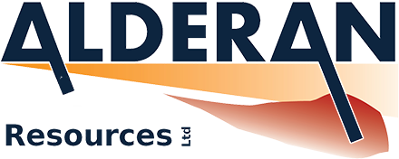

Living a geological lifestyle since 2006. Serving the mining and exploration industry since 2012. Passionate field geologist in all types of terrains and countries. Gained experience across the world on nearly all continents: from the hot desert to the cold ice. A holistic view and a strong sense for space and time are the key essentials in geology.


- 


Mineral Exploration
Serving the mineral exploration industry across the world since 2012. Interdisciplinary. Holistic. Open minded. Desert, jungle, civilization or the Polar Regions - it doesn't matter. Polar Regions? Oh yes, a strong focus! A geochemical sampling program is need? It takes the full path from taking the sample, integrating into a database and ensuring QA/QC and chain of custody of analyses results.
Commodities: base metals (Cu, Pb, Zn, Ni), precious metals (Au, Ag, PGE), speciality metals (Sb, Co), industrial minerals (fluorite, barite, cryolite) - the list is happy to grow.

Surface Mapping
With pen, paper and mylar. It still works! Digital tools and GIS-systems are making it even better.

Underground Mapping
Caves, abandoned mines or active underground operations. General overview mapping, structural mapping or mapping for commodity grade. There is no better 3D outcrop in the world.

Underground reconnaissance
There is a black hole that nobody knows where it leads to? It is time to shead light into the dark. Man-made or natural. Narrow tubes or vertical shafts. Rock or ice. Rope access, swimming in a wetsuit or just plain walking on dusty ground.

Drill Programm Planning
Greenfield to brownfields exploration drilling. Remote, close to or even in town. Helicopter- and ship-supported. There is always a solution in the planning and even still in the managing phase of a drilling campaign. It does not end with a drill rig set in place. Core handling, logging, documenting and sampling procedures. It is about the little details from sufficient water and power supply, non-frozen pipes all the way to well safety and control. Completed an IWCF Well Control Level 4 course in 2021.

Core Logging Facility Planning & Setup
Setting up a drilling program and carrying it out is one thing. But core handling, logging, sample preparing and storing is another. There are infinite ways of setting up a core logging and storage facility. There is certainly a tailored solution for your project.
Taking part in Polar Expeditions since 2014. Set of skills like a Swiss army knive. There is a way for everything. Working for various companies as Expedition Leader and Expedition Guide. Besides expedition support for the mineral exploration industry, most of the work is ship-based on expedition cruise ships of various size.

Expedition Support
Experience with remote / fly camps including camp construction & logistics. Strong sense for safety and risk management. Open-minded problem solver. If things need to get done, things will get done. Experience with ship and helicopter operations.
Local knowledge in the Polar Regions - especially Greenland.
Polar Expedition Cruises
Expedition Leader in both Polar Regions for various cruise ship operators. 12-passenger ships, sailing vessels, 100-passenger expedition vessels to larger cruise ships. Completed STCW courses in security awerness and crowd management.
Arctic destinations: Svalbard with Bjørnøya, all around Greenland, Jan Mayen, Northern Norway, Iceland, Fair Isle Antarctic destinations: Falkland Islands, South Georgia, South Sandwich Islands, Antarctic Peninsula, Wedell Sea

Small Boat / Zodiac Operator
Small boat operator since 2014. Holding valid powerboat licenses. Acted as driving instructor on various cruise ships. Comprehensive experience in high wind and high wave conditions including beach landings in those conditions (front and stern). Basic understanding of boat / engine maintenance.

Firearms Handler & Bear Protection
Certified firearms handler for bear protection since 2012. Acted as armorer, dedicated firearms specialist, and (polar) bear specialist on various expeditions. Holds a valid Svalbard firearms loan license.

Rope Access Specialist
Holding a level-2 rope access certificate from the Swiss Mountain Guides Association. Experience in all types of terrain - rock & ice - from previous expeditions and as a certified mountain & cave rescuer.

Offroad Vehicle Operator
Years of experience in operating offroad vehicles in various terrains across the world. Sherps, ATVs, UTVs, Skidoos, Landcruises and other 4x4 vehicles. Experience on rock, sand and ice.

Emergency Training: Medical & Fire
Certified Basic Emergency Medical Technician, Mountain Rescue Cordinator and Cave Rescuer, includes: standard rope rescue, high-angle industrial rescue, cable car evacuation, air rescue, cave rescue. Certified Fire Fighter including the use of breathing devices.

Craftmanship
Loghouse building, general woodworks, basic electric works. What ever it is needed to make things work.

Expeditions, geology work in remote areas of the world, a general interest in nature and travel. And always a camera alongside. A recipe for good photo opportunities and interesting motifs. You are looking for a nice photo for your wall or a document? You simply want to enjoy nice photographs? Visit the photography gallery and store: https://tobiasbrehm.com (LINK GEHT NICHT!!!)
In need of a scientific translation service for documents in the field of natural sciences - especially within geology and/or mining? Let's get it done! Professional translations are possible for German and English. If you only need to know, what a foreign text includes, translations from French into English or German are also possible.